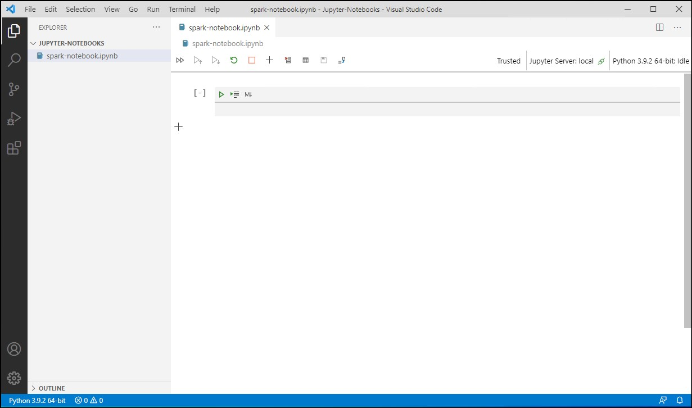
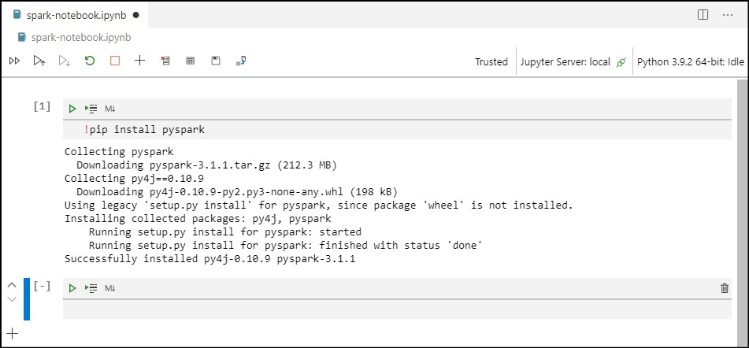
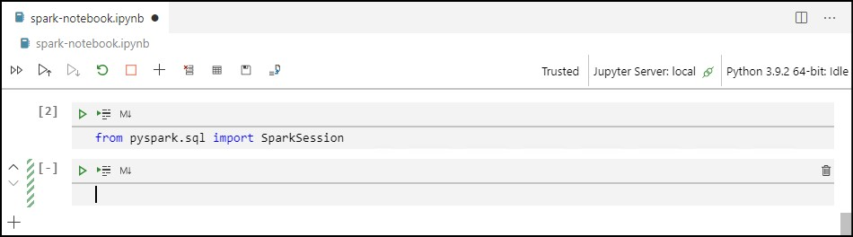
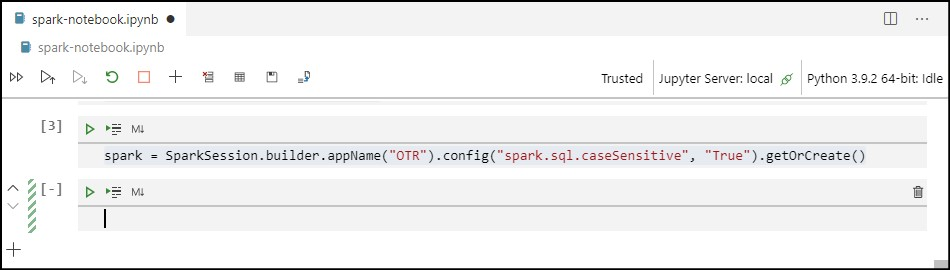
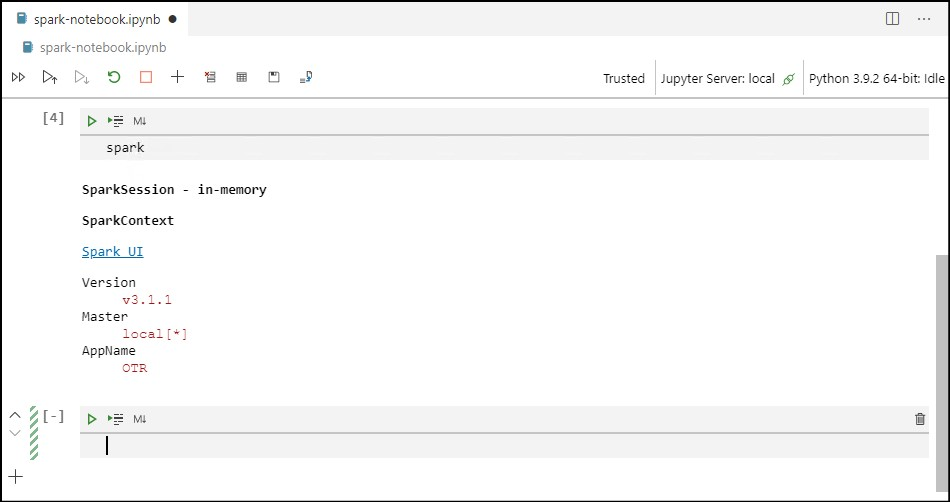
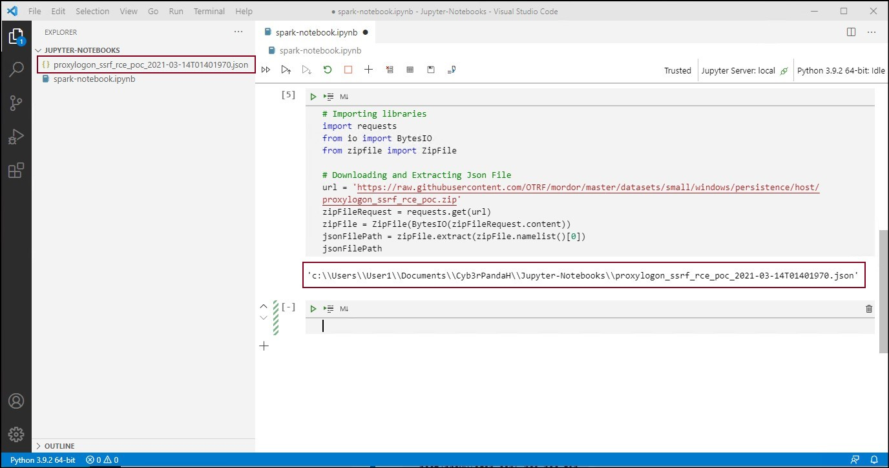
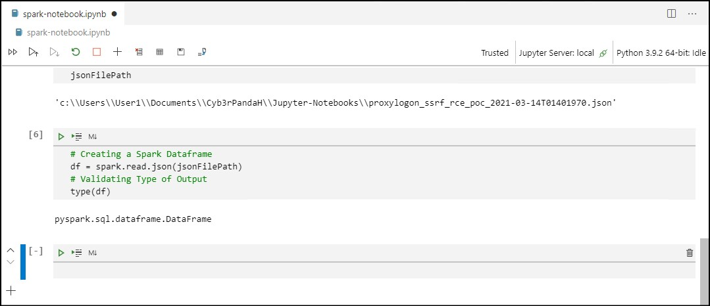
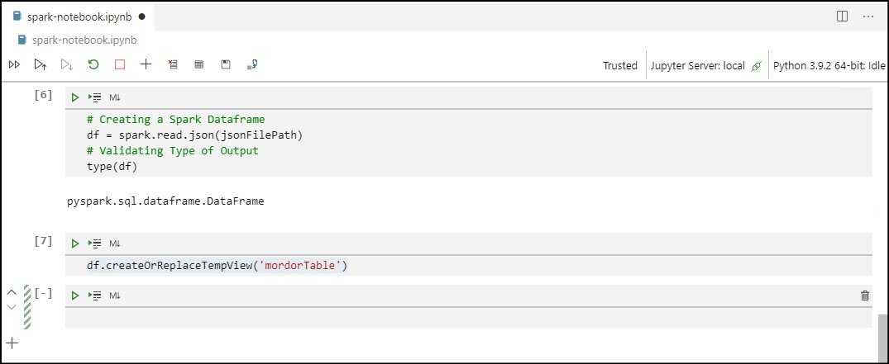
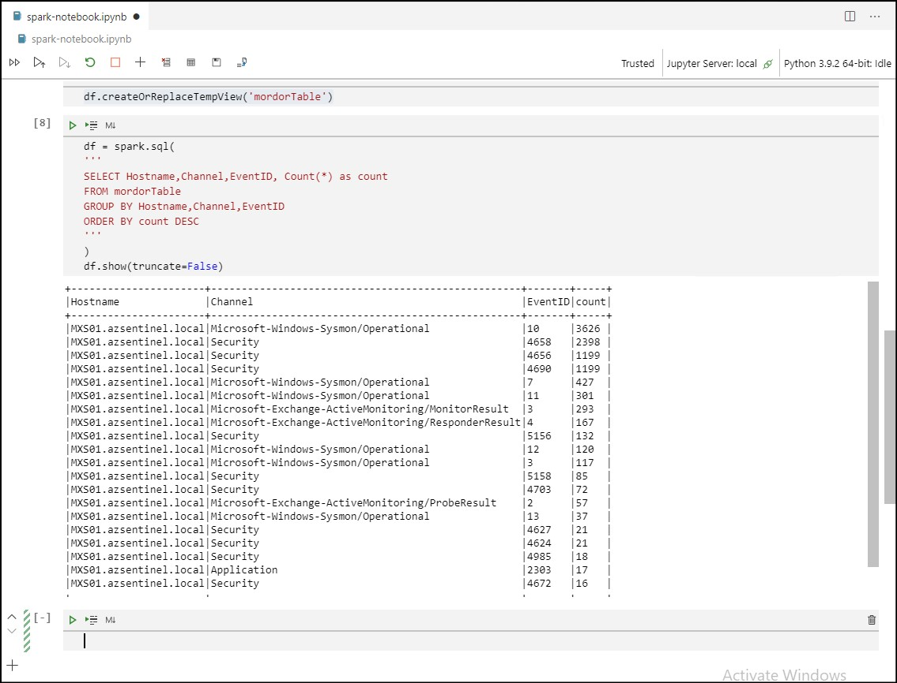

PySpark.SQL and Jupyter Notebooks on Visual Studio Code (Python kernel)
In this blogpost, I will share the steps that you can follow in order to execute PySpark.SQL (Spark + Python) commands using a Jupyter Notebook on Visual Studio Code (VSCode). During the development of this blogpost I used a Python kernel in a Windows computer.
Pre-requisites
In order to complete the steps of this blogpost, you need to install the following in your windows computer:
Java: you can find the steps to install it here.Visual Studio Code: you can find the steps to install it here.Python Extension for Visual Studio Code: you can find the steps to install it here.Python Interpreter: you can find the steps to install it here.
Setting Up a PySpark.SQL Session
1) Creating a Jupyter Notebook in VSCode
- Create a Jupyter Notebook following the steps described on My First Jupyter Notebook on Visual Studio Code (Python kernel).

2) Installing PySpark Python Library
- Using the first cell of our notebook, run the following code to install the
Python APIfor Spark.!pip install pyspark - You can also use the VSCode terminal in order to install PySpark. The steps to install a Python library either through a Jupyter Notebook or the terminal in VSCode are described here.

3) Importing SparkSession Class
- We start by importing the class SparkSession from the PySpark SQL module.
- The
SparkSessionis the main entry point for DataFrame and SQL functionality. A parkSession can be used create a DataFrame, register DataFrame as tables, execute SQL over tables, cache tables, and even read parquet files.from pyspark.sql import SparkSession

4) Creating a SparkSession
- In order to create a SparkSession, we use the Builder class.
- We give our Spark application a name (
OTR) and add a caseSensitive config. - We are assigning the SparkSession to a variable named
spark.spark = SparkSession.builder.appName("OTR").config("spark.sql.caseSensitive", "True").getOrCreate()

5) Verifying SparkSession
- Once the SparkSession is built, we can run the spark variable for verification.
spark

Running More Spark Commands
For the last section of this blogpost, I am sharing three more basic commands that are very helpful when performing tasks with Spark:
- Creating a Spark dataframe using
read.jsonmethod. - Creating a Temporary View of a Spark dataframe using
createOrReplaceTempViewmethod. - Executing a SQL-like query using the
sqlmethod.
0) Importing a Mordor Dataset
- In order to show you these examples, we need data. Therefore, I will use a Mordor dataset that contains security event logs for the execution of a public POC to abuse Exchange vulnerabilities (CVE-2021-26855 server-side request forgery (SSRF) vulnerability).
- Download the Mordor dataset (json file) following the steps described on Importing a Mordor Dataset with Jupyter Notebooks on Visual Studio Code (Python kernel).
# Importing libraries
import requests
from io import BytesIO
from zipfile import ZipFile
# Downloading and Extracting Json File
url = 'https://raw.githubusercontent.com/OTRF/mordor/master/datasets/small/windows/persistence/host/proxylogon_ssrf_rce_poc.zip'
zipFileRequest = requests.get(url)
zipFile = ZipFile(BytesIO(zipFileRequest.content))
jsonFilePath = zipFile.extract(zipFile.namelist()[0])
jsonFilePath

1) Creating a Spark Dataframe
- In order to create a Spark dataframe from a
jsonfile, we use theread.jsonmethod. - We are using the
jsonFilePathvariable from the previous section that contains the path or directory where thejsonfile was stored.# Creating a Spark Dataframe df = spark.read.json(jsonFilePath) # Validating Type of Output type(df)

2) Creating a Temporary View of a Spark Dataframe
- In order to create a temporary view of a Spark dataframe , we use the
creteOrReplaceTempViewmethod. - We can use this temporary view of a Spark dataframe as a
SQLtable and define SQL-like queries to analyze our data. - We will use the
dfSpark dataframe defined in the previous section. The name that we are using for our temporary view ismordorTable.df.createOrReplaceTempView('mordorTable')

3) Executing a SQL-like Query
- In order to execute a SQL-like query, we use the
sqlmethod. - Using
mordorTableas a reference, we will execute the following code to summarize security event logs provided by the dataset. - We are performing a
stack countingoperation on the data, and we are grouping the result byHostname,Channel, andEventID.df = spark.sql( ''' SELECT Hostname,Channel,EventID, Count(*) as count FROM mordorTable GROUP BY Hostname,Channel,EventID ORDER BY count DESC ''' ) df.show(truncate=False)

References
- https://spark.apache.org/docs/2.4.0/api/python/pyspark.sql.html
- http://spark.apache.org/
- https://jupyter.org/index.html
- https://mordordatasets.com/notebooks/small/windows/02_execution/SDWIN-210314014019.html
Subscribe to Open Threat Research Blog
Get the latest posts delivered right to your inbox